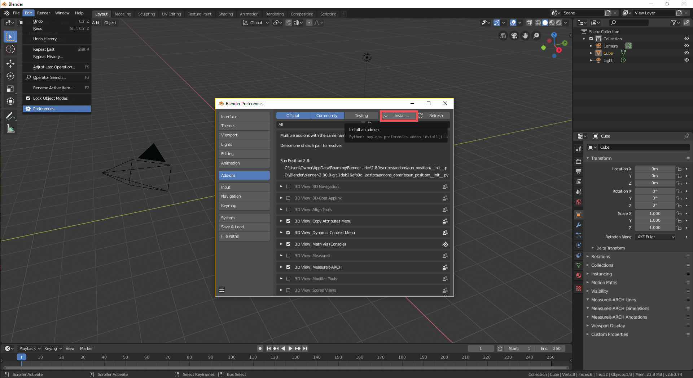

Installation
- Install Blender 2.8 or higher
- Download the latest zip file from https://github.com/kevancress/MeasureIt_ARCH
- Open the Add-on Preferences (Edit -> Preferences -> Add-ons) and click install.

- Navigate to and double click on the "MeasureIt_ARCH_VERSION.zip"
- Click the Checkbox to enable the Add-on